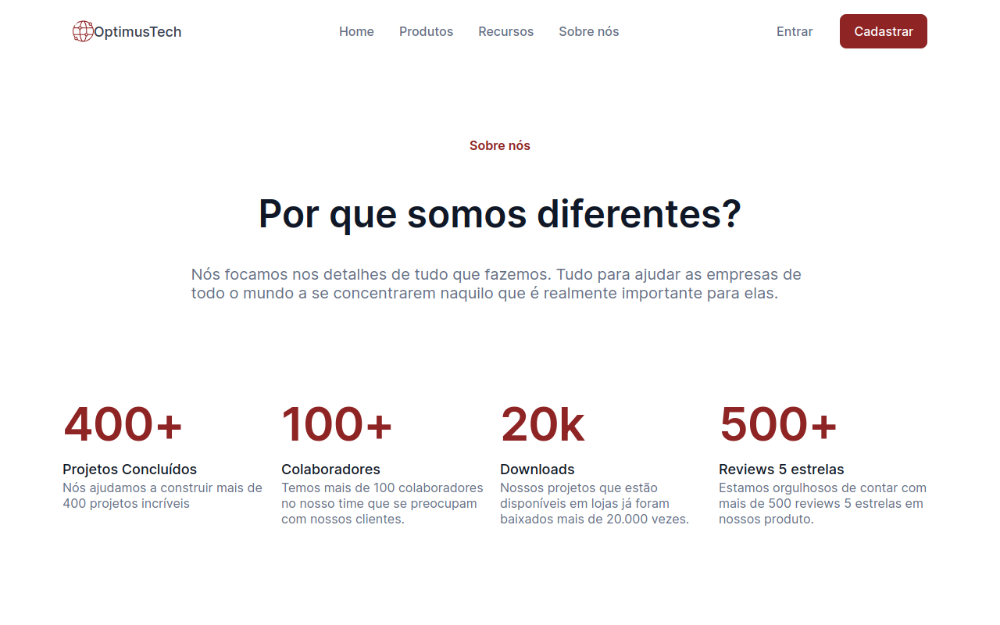
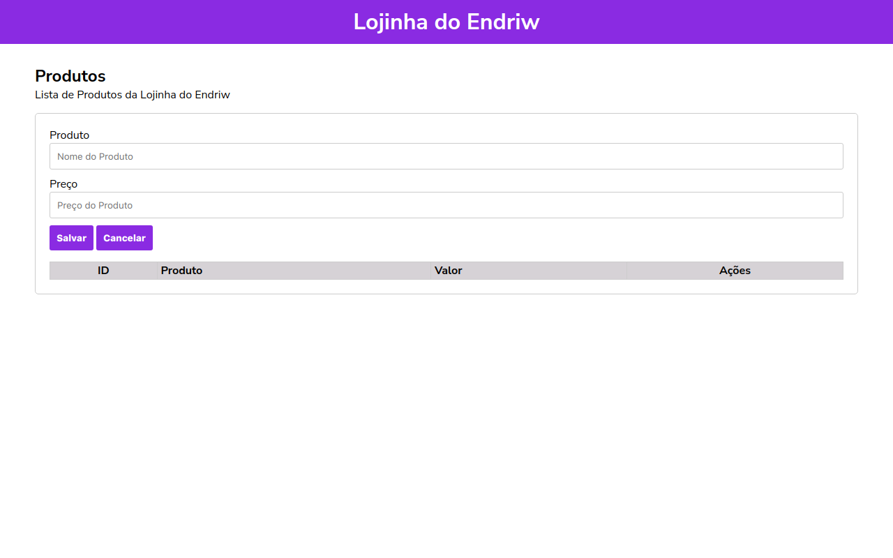

Meus Projetos
Realizei projetos utilizando HTML, CSS e JavaScript, e tive a
oportunidade de aprofundar meus conhecimentos ao aprender SASS/SCSS,
aplicando-os em alguns desses projetos. Vale destacar o projeto
"Animais Fantásticos", desenvolvido durante o curso da
Origamid. Nesse projeto, adquiri experiência em conceitos e
ferramentas fundamentais, incluindo:
automação do frontend, uso de gerenciamento de pacotes, ESLint,
Webpack e Babel.
Além disso, explorei os princípios essenciais do Git,
aprimorando minhas habilidades na criação de branches, realização de
merges e na compreensão de como comparar e mesclar alterações ao
efetuar um pull. Esses conhecimentos proporcionaram uma compreensão
abrangente das práticas essenciais para o desenvolvimento em equipe.
Meu segundo projeto em destaque é este Portfólio, onde
tive a oportunidade de colocar em prática muitos dos conhecimentos
adquiridos ao longo da minha jornada até aqui. Deixo abaixo alguns dos
projetos que realizei, para mais informações visite meu GitHub.
-


- 

- 